直接转矩控制
创建于2021-4-2
该项目完成于2019-5，原创
该项目完成于2019-5，原创
除了矢量控制，交流电机还有另外一种高性能控制方法，就是直接转矩控制。矢量控制分别通过控制转矩电流和励磁电流实现对转矩和磁链的控制，而直接转矩控制可以实现对转矩和磁链的直接控制，理论上响应会更快。直接转矩控制中使用的是定子磁链信息，定子磁链相对于转子磁链更容易获得，而且通常只受到定子电阻的影响，因此直接转矩控制对参数的鲁棒性要更好。
直接转矩控制算法通过选择合适的电压矢量，实现对转矩和磁链幅值的控制。下面将简单说明如何对电机转矩进行控制，上图为定子磁链和转子磁链的示意图，两者的夹角为θ，则电磁转矩可以用下式计算出来，可以看出，当定子磁链和转子磁链夹角增大时，电机转矩增大，反之转矩减小。选择使θ增大的电压矢量就可以使转矩增大，而选择使θ减小的电压矢量就可以使转矩减小。
实现了对转矩的控制，就可以实现电机的调速。直接转矩控制的原理简图如下所示，其他相关内容这里不再详述。

与矢量控制相比，直接转矩控制也存在一些问题，比如开关频率不稳定，电流限制实现不如矢量控制方便等等。为了克服这些缺点，开发了一种新的直接转矩控制算法，如下图所示。新的直接转矩控制算法可以保证开关频率固定，同时可以方便地实现电流限制。采用速度控制时，可以取消转矩控制环节，简化系统结构，而且控制器参数的设计也较为简单。此外，新的直接转矩控制算法可以支持多种电机的控制，包括但不限于异步电机、永磁同步电机和同步磁阻电机。
